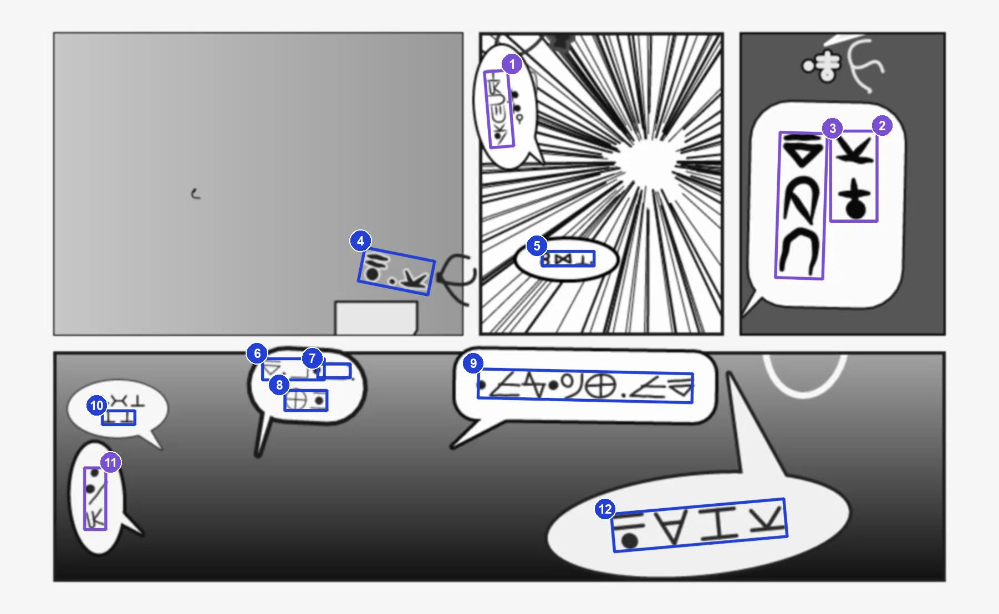
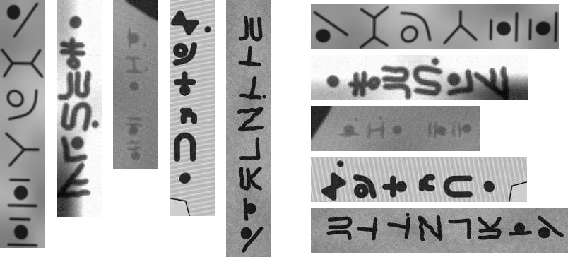
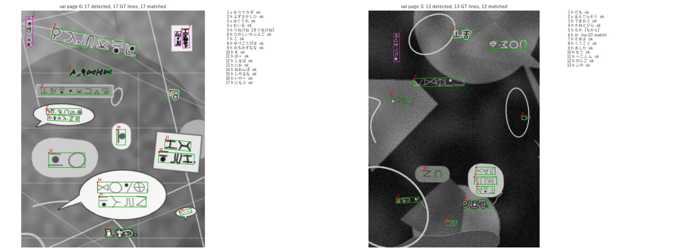
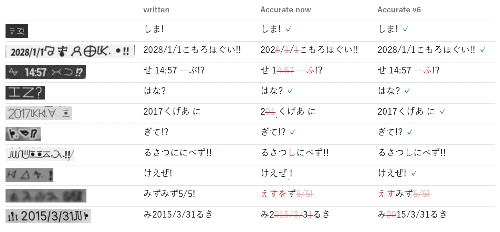

Research write-up · Deep dive
Reading an invented alphabet in the browser: a 1 MB int8 OCR for Hunter × Hunter script
Synthetic lines and pages, a MobileNetV4 CTC reader and a DBNet-lite line detector, quantisation-aware training that follows Espressif's int8 rules, and a Rust engine in WebAssembly that matches them bit for bit. Every number below comes from the project's research journal and run logs.
Update, November 25, 2026. This report describes the first models: the v4 readers (75 classes) and det_v2. The Reader now runs a model family trained with photo-style pages as well. Fast is det_v2 with retrained tiny readers (91 classes: the kana, space, digits and ! ? : / . -); Accurate is a MobileNetV4-small 1.0 detector at 960 px with wider readers, 3.6 MB in all. Their training and benchmarks are in docs/research/JOURNAL.md (2026-11-25).
Update, November 26, 2026. New readers that read numbers drawn as part of the lettering, such as a model number 07 or a !! after a title, are trained and tested but not in the Reader yet: Appendix E.
Abstract
The Hunter × Hunter manga and anime write signs, letters and title cards in an invented alphabet that is a one-to-one cipher for Japanese kana. This report describes an optical character recogniser (OCR) for that script that runs entirely in a mobile web browser. No labelled data exists, so every model is trained on generated images: a line generator, built in four versions that each answer a measured failure, and a page generator that also draws unlabelled ordinary text and icons as negatives. The system has three int8 models, about 1 MB together. A DBNet-style line detector (350k parameters, 1.57 G multiply-accumulates per 640 × 640 page) finds lines, and two CTC readers (323k parameters, 154 M MACs per 48 × 768 line) read horizontal lines and vertical columns. All three share a MobileNetV4-small backbone. Quantisation-aware training that reproduces Espressif's power-of-two int8 rules closes most of the int8 gap. A no_std Rust engine, compiled to WebAssembly, reproduces Espressif's integer simulation bit for bit and runs at about 16 G MAC/s on one desktop thread. On generated data, the readers reach 0.84% (horizontal) and 0.71% (vertical) character error rate in int8, and the detector reaches F1 0.922 in fp32. The full int8 browser pipeline reaches F1 91.0% at about 0.2 s per page. We report every ablation, including the failures, and the limits of an evaluation that uses no real images.
Keywords: scene text recognition · CTC · DBNet · synthetic data · int8 quantisation · QAT · WebAssembly · power-of-two scales

1 Introduction
In Hunter × Hunter, the text inside the story world is drawn in an invented script. Fans worked out that it is a substitution cipher for Japanese kana (Hunterpedia; Omniglot). There are 46 kana glyphs plus the long-vowel mark ー, so 47 base glyphs. Voiced kana work as in Japanese: a small filled dot at the lower right turns か into が, and a small ring turns は into ぱ. Hiragana and katakana share glyphs, and small kana (ゃ, っ) are drawn smaller. Reading the script therefore means reading kana (Figure). Romanising or translating them afterwards is easy.
The goal was a reader small enough for a phone's browser: a photo, screenshot or camera frame goes in, and kana and romaji come out, without a server. The first target was even smaller, an ESP32-S3 microcontroller. That target was parked partway through, but its constraints shaped the models: int8 arithmetic with per-tensor power-of-two scales, and only convolutions, ReLU and additions.
Three problems make this harder than it looks. First, there is no dataset: real examples number in the dozens, and they are copyrighted frames. Second, the voicing marks are tiny. A dakuten dot has a radius of 0.065 em, so at a 32 px line height it is one or two pixels across, and confusing が with か is the most common error throughout this report. Third, the script appears among other things: speech bubbles, character art, Japanese and English text, icons. A detector trained only on Hunter script has no reason to ignore ordinary writing.
Figure shows the system. Offline, two generators make training images, PyTorch trains the models, and a quantisation chain turns them into int8 files. Online, a Rust engine compiled to WebAssembly runs a detector and two readers in the browser.
The contributions are practical rather than algorithmic:
- Synthetic data for an invented script. A vector line generator (four versions, each motivated by a measured failure) and a Rust page generator that writes DBNet targets and, since its third version, unlabelled ordinary text and icons as hard negatives (Section 3).
- Small int8 models with a restricted op set. A conv-only CTC reader and a DBNet-lite detector on an ImageNet-pretrained MobileNetV4-small, using only Conv, ReLU and Add, plus nearest Resize and Concat for the detector (Section 4).
- Quantisation-aware training that matches the target exactly. Fake quantisation that reproduces ESP-PPQ's power-of-two rules, verified exponent for exponent and logit for logit (Section 6).
- A bit-exact int8 engine. A no_std, dependency-free Rust engine with WebAssembly SIMD kernels whose output equals ESP-PPQ's simulation on every tested vector (Section 6).
- An honest evaluation of the whole pipeline on generated pages: post-processing and crop sweeps, a confidence filter, and a false-positive study on non-Hunter text (Section 7).
2 Related work
Reading Hunter script. As far as we can tell, this is the first OCR for the Hunter × Hunter alphabet. Searches of the web, GitHub and Hugging Face on 25 November 2026 found tools that go the other way: they turn typed text into Hunter script, for example phonetic converters that set text in a Hunter font. A few Hugging Face repositories are named after the series, but they are empty placeholders or unrelated image classifiers. None of them reads the script from images.
Line recognition with CTC. Connectionist temporal classification [1] trains a network that emits one class per time step, including a "blank", against an unsegmented label. CRNN [2] combined a convolutional feature extractor, a recurrent layer and a CTC transcription layer into one trainable model for scene text. Our reader keeps CRNN's layout and CTC loss but replaces the recurrent layer with depthwise convolutions. A conv-only network keeps the int8 engine to about six operations, all quantised by the same rules.
Text detection by segmentation. DBNet [3] predicts a probability map of shrunk text regions and a threshold map, and makes binarisation differentiable with a steep sigmoid of their difference. At inference only the probability map is needed, and boxes are recovered by expanding ("unclipping") its connected components. We use DBNet's targets and losses almost unchanged. Its hard-negative mining follows OHEM [7]. PP-OCR [8] showed that a small DB detector plus a small CTC recogniser make a practical lightweight OCR system. Our split into a detector and line readers follows the same design, at a far smaller size because the alphabet has 74 tokens.
Backbones. MobileNetV4 [4] introduced the Universal Inverted Bottleneck (UIB) and a family of mobile models. Its "conv-small" variants use only plain and depthwise convolutions with ReLU, with no squeeze-excitation or hard-swish, which suits fixed-point hardware. We use the 0.5-width version, pretrained on ImageNet.
Synthetic training data. Jaderberg et al. [9] trained word recognisers entirely on rendered images, and SynthText [10] rendered text into natural images to train localisation. Both had real fonts to render. Here the "font" itself had to be traced, and there is no real benchmark to calibrate against.
Integer inference. Jacob et al. [5] defined integer-only inference with fake-quantisation training (QAT). TQT [6] trains quantisation thresholds in the log domain and constrains scales to powers of two, so that rescaling is a bit shift. Espressif's ESP-DL runtime and ESP-PPQ quantiser [11] use per-tensor, symmetric, power-of-two int8 for ESP32-S3 targets. We adopt that scheme as the contract between training and the engine.
3 Synthetic data
3.1 Glyphs
All 47 base glyphs were traced by hand from the fan wiki's chart into stroke primitives: lines, arcs, ellipses, dots and splines, read off 4–5× zoomed crops and rendered back side by side for comparison. Omniglot's chart agreed on every glyph except も, which it ends in a ring instead of a dot. Two official sources found later settled the remaining forms. The 2011 anime's alphabet chart matched the trace on 43 of its 46 glyphs. It showed ま mirrored (pointing left), せ drawn narrow like a "4", and も ending in a ring. A printed guidebook chart also has the left-pointing ま, but the wide せ and the dotted も. So the fan chart's ま was most likely an error, while せ and も simply have two official styles.
The generator therefore samples weighted forms (Figure): ま points left 85% of the time, せ and も use each form half the time. Voicing marks are placed relative to the bounding box of the form actually drawn. Version 4 of the line generator also moves them: sideways to 0.55–1.35 times the chart offset, but never closer than half the stroke width plus the mark radius plus 0.03 em, and up or down by U(−0.06, 0.03) em.
Labels use 73 kana plus the space, 74 tokens in all. Katakana and small kana are folded into full-size hiragana, because the glyphs cannot tell them apart reliably. Relative glyph sizes are kept as in the chart: い is a lone dot and て is short. Normalising every glyph to the em box would turn い into a large disc and blur the difference between い and a dakuten.
3.2 Line generator
The line generator (Python, hxh_ocr/synth.py) draws glyphs from vector strokes, so styles are cheap to vary. There are three styles: clean (font-like), hand (wobble, stroke jitter, small rotation, scale and aspect jitter) and brush (pressure-tapered stamping). Stroke widths run from 0.04 to 0.24 em. Lines run horizontally, or vertically on 30% of samples. Spacing is monospaced or proportional, with occasional italic shear and curved baselines. Backgrounds include flat, gradient, value noise, paper, manga screentone, hatching and random shapes. Ink effects include outlines, drop shadows, patchy ink and gradient ink. Degradations include blur, motion blur, down- and up-scaling, uneven light, contrast and gamma, noise, binarisation and JPEG. Each sample is a crop 64 px thick, so training can pick 32, 40 or 48 px by downscaling. Every sample is seeded from (seed, split, index), so any set can be regenerated exactly.
The generator went through four versions (Table, Figure). Each change answered a failure seen in a model's worst predictions or in real images.
| version | what changed | why | train + val |
|---|---|---|---|
| v1 | Traced glyphs, three styles, backgrounds, effects and degradations; small kana at 0.55–0.78 scale on about 65% of lines; word spaces. | First version. Omniglot's chart added the small-kana sizes and spaces. | 100k + 5k |
| v2 | Grayscale, JPEG q90, more clutter. | More data. The worst-32 grid then showed label noise: Otsu binarisation (5% of samples) turned text into blobs, and neighbouring lines could show as much as the labelled one. | 500k + 10k |
| v3 | Tighter crops (em U(0.58, 0.84) of the line height on 65% of lines, U(0.40, 0.62) on the rest); neighbours show at most 35% of their height and stay 0.12 em away; binarisation only on uniform backgrounds, at the ink–background midpoint. | Remove v2's label noise; give the marks a few more pixels. | 349,558 horizontal train lines |
| v4 | Official glyph forms; "character art" beside the line ends on 25% of lines; bold style on 18% of lines (was 10%) up to 0.30 em (was 0.24); drop shadows on 18% (was 10%), 60% of them soft; mark jitter. | Failures on anime title cards: mirrored ま, narrow せ, art at the crop edge read as glyphs, heavier strokes. | 500k + 10k |
v1 and v2 were used together in round 1 (419,381 horizontal training lines). The v3 row gives the horizontal training lines from the run configs; the journal does not record the v3 set's total size.


Speed mattered more than expected. The first full run made about 180 samples per second on 14 worker processes. Profiling with cProfile showed Python loops (brush stamping, join circles, a looped densify), not image operations. After vectorising them and pinning BLAS to one thread per worker, throughput reached 572 samples/s, so 100k lines take about three minutes. Version 4 renders about 78 lines per second per core.
3.3 Page generator
The detector needs whole pages with every line labelled. A second generator, written in Rust (rust/hxh-synth), composes manga-style pages 512–1024 px on the long side. It started in Python and moved to Rust on the owner's call; the Rust version made 92 pages per second on six threads against 16.5 for the Python one (about 3.5 times faster per core). Glyph strokes, variants, weights and word lists are exported from the Python package to one JSON file (73 glyphs, 77 forms, 264 words) that the binary embeds, so there is one source of truth.
Pages use three layouts: manga panels (60%), an anime still or poster (25%), and a document with paragraphs and ruled tables (15%). Text groups are speech bubbles (ellipse, cloud, burst, with tails), captions, signs, cards with soft shadows, paragraph blocks, outlined titles and sound effects, small fillers and table cells. Groups are rotated by up to ±12°, sometimes warped in perspective, and about 11% of lines are vertical. Distractor art is drawn before and after the text, and about 3% of pages have no text at all. Each line's quadrilateral comes from its stroke geometry, so it is tight around the ink, and lines never overlap (Figure).

The main training set, pages_v2, has 30,000 training and 1,000 validation pages. It was written in 3 minutes at 168 pages per second on 10 threads (3.2 GB). It holds 500,141 lines, 16.7 per page on average (at most 56), with a median line height of 19 px (1st percentile 9 px, 99th 70 px); 905 pages are art only.
3.4 Ordinary text and icons as negatives
The first detector (det_v1, trained on pages_v2) was tried on a screenshot of Omniglot's page about the alphabet. It boxed every line of text on it: headings, Japanese with kanji, romaji, English prose, URLs, and rows of icons. The readers then turned that writing into confident-looking kana. The detector had only ever seen Hunter script and drawn art, so anything text-like was text.
The third page set, pages_v3, adds ordinary writing in real fonts and icons, never labelled. DBNet's targets treat unlabelled pixels as background, so the detector has to learn to fire only on Hunter script (Figure). Fonts are read at run time from the system font folder; nothing is copied or embedded. On the build machine the generator found 80 faces: Latin sans, serif, mono, display and handwriting faces, Japanese Gothic faces, Korean, and icon fonts (Segoe MDL2 Assets with 1,525 glyphs, Segoe Fluent Icons with 1,624, emoji outlines, Webdings, Wingdings and others). The text comes in several kinds: English-like sentences and headings, romaji, URLs, dates, prices and other numbers, Japanese sentences with kanji (also as vertical columns), kana, and a little Korean, Greek and Cyrillic (about 3% each). Unicode symbols such as ∀, ∇, rings and dots are deliberate hard negatives, because many Hunter glyphs look like them.
Foreign text enters in three ways. Whole text groups are written in it with probability 0.15 (1.6 times that on manga pages). Mixed groups hold both kinds of lines with probability 0.08. Extra elements fill the space left over: labels, page numbers, credits, subtitles, single icons, rows and grids of icons. A fourth layout, used for 15% of pages, imitates a screenshot of a web page, document or app (a quarter of those are app interfaces). It has navigation bars, headings, paragraphs at 6–19 px, lists, tables, sidebars and footers, sometimes with a Hunter sample block or an alphabet chart like Omniglot's. About 3% of pages are negatives with no Hunter text at all.


One rule keeps the labels clean. A foreign run must stay at least 0.3 times the larger of the two line heights away from every labelled quadrilateral, plus its outline or shadow halo (Figure). The check uses exact convex-polygon distances on the final quads, both when a group is placed and when each line is drawn. A test checks it on 320 pages generated with more mixing than the defaults.
The training set pages_v3 has 30,000 training and 1,000 validation pages (seed 3). A separate check set, pages_foreign (300 pages, seed 4), is built to be hard: 55% web layouts, 35% negative pages, foreign groups with probability 0.5, mixed groups 0.15, 1.5 times the foreign extras and 3 times the icons. It is used only for evaluation (Section 7.8).
4 Models
4.1 Line reader
The reader is a CRNN-style CTC model without recurrence (Figure). The backbone is timm's mobilenetv4_conv_small_050, pretrained on ImageNet, cut after its fourth stage; the 480- and 1,280-channel heads and the classifier are dropped. The first convolution's RGB kernel is summed into one gray channel. The first two stages keep stride 2 in both directions, so the width shrinks by four. Every later stride is set to (2, 1): it halves the height but keeps the width. Changing a stride does not change weight shapes, so the pretrained weights load unchanged. A 48 × 768 line becomes 192 columns of 64 features, two rows high. A mean over the height leaves one row. A sequence head of two residual blocks, each a depthwise (1, 5) convolution and a 1 × 1 convolution with ReLU, then dropout 0.1 and a 1 × 1 classifier, gives 75 scores per column: 74 tokens and the CTC blank.
The op set is deliberately narrow. After BatchNorm folding, the ONNX graph of the 32 px model has 49 Conv, 32 Relu, 12 Add and one ReduceMean, and nothing else; the engine runs the ReduceMean as an average pool. There is no LSTM, attention, squeeze-excitation or hard-swish. Table lists the variants trained. The "three-stage" model stops after the third stage (96k parameters). The "tiny" model is a from-scratch control with plain depthwise-separable blocks whose widths were tuned to match the MobileNet's parameters and MACs.
| model | params | 32 × 256 | 48 × 384 | deployed input |
|---|---|---|---|---|
| mnv4s, 4 stages, ImageNet | 323.0k317.5k BN-folded | 30.2M | 77.0M | 154M at 48 × 76860.5M at 32 × 512 |
| mnv4s3, 3 stages | 96.1k | 15.3M | 33.9M | 30.5M at 32 × 512 |
| tiny, from scratch | 327.8k324.1k BN-folded | 30.1M | 70.4M | not deployed |
Input lines are gray, scaled to the model height with their aspect kept, capped at 16 times the height in width, and normalised to [−1, 1]. Training batches are padded to a multiple of 8 pixels, and the CTC input length uses each line's real width, ⌈w/4⌉, not the padded width. Online augmentation is light: horizontal scale 0.85–1.15, random padding, 10% inverted lines and a little noise. The deployed model has a static 48 × 768 input: a line is area-resized to 48 px, padded on the right by repeating its last column, and squeezed only if it is wider than 768 px.
Decoding is greedy (Figure). With per-column scores , the reader takes the best class in every column, merges repeats and drops blanks:
where removes consecutive repeats and then blanks. A blank between two equal kana keeps them apart, so んん can still be written. Ties go to the lowest class id, as in numpy.argmax. For display and filtering, each emitted character gets the peak softmax probability of its class over the run of columns that emitted it, and a line's confidence is the mean over its characters:
4.2 Vertical reader
Manga bubbles are often written top to bottom. The reader cannot take a column as it is, so a vertical crop is turned 90° counter-clockwise: the first glyph ends up on the left and every glyph lies on its side. Turned glyphs collide with upright ones. ふ (a ⊃ shape) turned a quarter turn looks like う (∩), so a shared model would need to be told the orientation (Figure). Vertical columns therefore go to a second reader of the same design, trained only on turned columns: the 150,576 vertical training columns of synth_v4, which share the horizontal lines' length distribution. The orientation is stored in the checkpoint and switches calibration, hold-out sets and golden vectors throughout the int8 chain.

4.3 Line detector
The detector is a DBNet-lite on the same pretrained backbone (Figure). The four backbone stages give features at strides 4, 8, 16 and 32 with 16, 32, 48 and 64 channels. A light feature pyramid projects each to 48 channels with a 1 × 1 convolution and adds them top-down after nearest ×2 upsampling. Each level is then smoothed by a depthwise 3 × 3 and a 1 × 1 convolution down to 16 channels, upsampled to stride 4 and concatenated into 64 channels. The head is a 3 × 3 convolution to 32 channels, a ×2 upsampling, a 3 × 3 convolution to 16 channels and a 1 × 1 convolution to two output channels at stride 2: a text-kernel logit and a vertical-orientation logit. For a 640 × 640 letterbox that is a 320 × 320 map. A threshold head of the same shape is used only in training. Every layer uses ReLU, and BatchNorm is folded at export.
The detector has 350k parameters (344k deployed, without the threshold head) and costs 1.57 G MACs per 640 × 640 page: 442 M in the backbone, 180 M in the pyramid and 947 M in the head. Almost all of the head's cost is in its two full 3 × 3 convolutions at high resolution; depthwise-separable versions would remove about 0.8 G MACs. A stride-2 output was chosen for small text: the median line is 19 px tall in a page, and much less once a page is shrunk to 640 px. The detector never sees mirrored pages, because ま and せ are mirror-sensitive.
Targets
The page generator writes DBNet targets from each line's quad [3]. With area and perimeter , every edge moves inward by
and neighbouring moved edges are intersected (a mitred offset). Pixels whose centres lie inside a shrunk quad form the kernel map. Lines whose kernel collapses, or that are thinner than 3 px, are masked out of the loss rather than labelled as background. The threshold target rises towards each quad's edges. For a pixel at distance from the nearest edge,
taking the maximum over quads, and its loss mask is the quad dilated by with round joins. The orientation target is 1 on the kernels of vertical lines. Figure lets you vary a line's aspect ratio and see the geometry; Figure shows the maps on a real generated page. A numpy port of the Rust rule reproduces the kernels exactly. OpenCV's fillPoly would fill about 0.5 px more on each side, so the trainer uses the numpy rule.

Loss
The kernel map and threshold map are combined into DBNet's approximate binary map
and the training loss is
where is binary cross-entropy on the kernel logit with online hard-negative mining [7] (all positives and the hardest negatives, three per positive), is an L1 loss on the threshold map inside its mask, is a Dice loss on , and is binary cross-entropy on the orientation logit inside text kernels.
Post-processing
Turning the int8 maps into lines is Rust code (rust/hxh-detect), no_std and allocation-free like the engine. The detector predicts shrunk kernels, so each one is grown back by DBNet's unclip: every side of a component's minimum-area rectangle, with area and perimeter , moves out by
The whole post-processing runs ten steps:
- Threshold in the integer domain: becomes for one precomputed integer (a logit above −0.8473).
- Connected components with 8-connectivity, each with its mean probability (the score) and the sum of its vertical logits.
- Convex hull of the component's pixel squares, so a kernel k pixels thick measures k (OpenCV's pixel-centre contours measure k − 1).
- Minimum-area rectangle by rotating calipers, identical to
cv2.minAreaRectwithin 5×10⁻⁵ px except for exact equal-area ties. - Unclip by (equation 7), or, as an option, by the exact inverse of the training shrink.
- Filters: score at least 0.5, short side at least 3 letterbox pixels, centre on the page rather than the letterbox padding.
- Orientation from the sign of the summed vertical logit.
- Quad clockwise from the top-left in reading orientation (a column starts at its top-right).
- Reading order: lines of one orientation join a block when their boxes are within one line thickness; blocks run top to bottom, lines inside a block top to bottom, columns right to left.
- Crops: a projective map of each quad, grown by margins of 0.3 line heights along the line and 0.2 across it, sampled bilinearly at the page's own resolution. Columns come out turned 90° counter-clockwise.
All of it uses f64 with software sqrt, exp and floor, so host and WebAssembly builds give bit-identical lines and crops. Against OpenCV on about 100k random components, hulls are identical and rectangles agree within 5×10⁻⁵ px except at ties. Post-processing a 320 × 320 map with 60 lines takes 0.7–2 ms, and letterboxing an A4 scan at 300 dpi takes 5–8 ms.
5 Training
All models were trained on one PC: an RTX 4080 SUPER (16 GB) under Windows 11, with PyTorch 2.15 (CUDA 13.2) and timm 1.0.31. Table lists the settings from the run configurations. Readers use AdamW with a learning rate of 2×10⁻³ and weight decay 0.05 (none on BatchNorm and biases), 500 warm-up steps, then a cosine decay to 1%. They run in bf16 autocast with the CTC loss in fp32, gradient clipping at 5, and an exponential moving average (EMA) of the weights with decay 0.999, which is what gets evaluated and exported.
| runs | data | input | steps | batch | lr | warm-up | BN re-est. | eval |
|---|---|---|---|---|---|---|---|---|
| readers (AdamW, wd 0.05, EMA 0.999, dropout 0.1) | ||||||||
| round 1: mnv4s, mnv4s scratch, tiny | synth_v1 + v2, 419,381 lines | 32 px | 30k | 128 | 2e-3 | 500 | 50 batches | 1k / 2,000 lines |
| round 2: mnv4s 32, 48 px, mnv4s3 | synth_v3, 349,558 lines | 32, 48 px | 30k | 128 | 2e-3 | 500 | 50 batches | 1k / 2,000 lines |
| round 3: mnv4s 48 px, mnv4s3 32 px | synth_v4, 349,424 lines | 48, 32 px | 30k | 128 | 2e-3 | 500 | 50 batches | 1k / 2,000 lines |
| vertical: mnv4s 48 px | synth_v4, 150,576 columns | 48 px | 30k | 128 | 2e-3 | 500 | 50 batches | 1k / 2,000 lines |
| quantisation-aware fine-tunes (AdamW, wd 0.01, from the EMA weights) | ||||||||
| qat_v3_*, qat_v4_* (round 2, 3, vertical) | own data; calibration: 64 val lines | deploy width | 4k + settle | 128 | 1e-4 | 200 | – | 500 / 2,000 lines |
| detectors (AdamW, wd 0.05, EMA 0.999, bf16) | ||||||||
| det_v1 | pages_v2, 30,000 pages | 512 crop | 36k | 16 | 2e-3 | 1,000 | 40 batches | 2k / 300 pages |
| det_v2 | pages_v3 + v2, 60,000 pages; from det_v1 | 512 crop | 16k | 16 | 5e-4 | 500 | 40 batches | 2k / 300 pages |
QAT "settle": after the 4,000 steps the exponents are recalibrated, and if any moved, 50 more steps are trained with the new ones (up to five rounds); logs end at step 4,250. Detector loss weights α, β, γ = 5, 10, 1 with k = 50 and 3:1 hard-negative mining.
5.1 EMA weights need their own BatchNorm statistics
At step 5,000 of the first pretrained run, validation CER jumped to 26%, then 50%, then 36%, while the training loss kept falling smoothly. The EMA averaged the weights over roughly the last 1,000 steps but copied the BatchNorm running statistics from the live model. Evaluation therefore paired averaged weights with statistics that belonged to different weights. Pretrained weights move fast at a learning rate of 2×10⁻³, so this run suffered most. A diagnosis on the step-5,000 checkpoint is unambiguous (Table).
| weights | BatchNorm statistics | val CER | exact lines |
|---|---|---|---|
| EMA (what evaluation used) | copied from the live model | 35.7% | 26.8% |
| EMA | re-estimated on 100 training batches | 2.5% | 89.0% |
| raw | stored | 5.2% | 80.0% |
| raw | re-estimated | 4.4% | 82.1% |
The fix re-estimates the BatchNorm statistics of a copy of the EMA model on 50 training batches (a cumulative average) before every evaluation, and saves that copy. The statistics folded into the convolutions at export are then the right ones. The bug had also corrupted best-checkpoint selection and every learning curve, so all three round-1 runs were restarted. The detector uses the same scheme with 40 batches.
5.2 Data loading on Windows
Two infrastructure problems cost more time than any model choice. First, the GPU sat at 9% utilisation, at about 830 images per second with 6 loader workers. A spawned worker processed an image in 0.69 ms, but the main process took 4.19 ms on files it had never read and 0.69 ms on files it had. The first open of each small file on Windows costs milliseconds (file-system and most likely antivirus overhead), and with 420k JPEGs read in random order that cost hit almost every sample. Packing each split into one memory-mapped file fixed it: 4 workers went from 787 to 9,211 images per second (11.7×), and 8 workers from 1,294 to 16,240. Each worker opens the map lazily, so the pack is not copied into every worker.
Second, a later round crashed with "paging file too small" while the machine still had free RAM. Committed memory had reached 71.7 of 72.2 GB. On Windows every spawned worker re-imports PyTorch and receives its own pickled copy of the dataset, which was then three Python lists of 350k items. Twelve workers at about 1.7 GB each, plus three training processes, used up the commit limit. Storing paths, labels and targets as numpy arrays (107 MB per worker copy), two workers per run and at most two runs at once fixed it. Two more lessons: three CUDA processes started at the same moment crashed under Windows' WDDM driver model, so runs now start one after another; and the dynamo ONNX exporter crashes when printing a ✓ to a cp1252 console unless PYTHONUTF8=1 is set.
6 Quantisation and the inference engine
6.1 The int8 scheme
Espressif's ESP-PPQ quantises an ONNX model for ESP-DL [11]. For the ESP32-S3 its .espdl files use one scale per tensor, symmetric int8 (zero point 0) and power-of-two scales stored as integer exponents. A tensor with exponent stores
with rounding half up: ties go towards +∞. Biases are int32 at the exponent , limited to a 20-bit range. The input exponent is −7, so a pixel normalised to lands on roughly ; pixels 127 and 128 map to −1 and +1, so the int8 input is never 0. Weight exponents come from the 99.99th-percentile magnitude , rounded up; activation exponents come from a KL-divergence calibration that picks a clipping threshold , rounded to the nearest power of two:
(hxh_ocr/qat.py reimplements both rules from ESP-PPQ's source.) Because every scale is a power of two, a convolution's rescale is a shift. Its accumulator , at exponent , becomes an output at exponent by
with an arithmetic shift for and a left shift for , then a fused ReLU if the layer has one (Figure). Figure shows what a power-of-two grid means for a real tensor: one step of the exponent doubles both the range and the step size, so the calibration can only choose between ranges a factor of two apart.
Per-tensor scales are a known risk for depthwise convolutions, whose channels can differ widely in range. The deployed reader shows it (Figure): its 17 depthwise weight tensors have a median exponent of −3 (range −7 to 0), its 29 1 × 1 weight tensors a median of −6 (range −8 to −2). A typical depthwise grid is therefore eight times coarser.
6.2 From PTQ to QAT
A spike first checked that every planned op exports for the ESP32-S3: a one-channel stride-2 first convolution, depthwise 3 × 3, 5 × 5 and 1 × 5 kernels, stride (2, 1), average pooling, Add and ReLU. All exported with no warnings. The exporter adds two things: a ReLU after an Add becomes a separate op with a 256-entry lookup table, and a skip tensor reused at another scale gets a RequantizeLinear op. A random-weight toy model was useless for measuring error, because its 75 class scores were nearly tied (median top-1 margin 0.014). A toy trained for 7 minutes (19k parameters, fp32 CER 20.4%) was the one measured.
On that toy, post-training quantisation (PTQ) with KL calibration cost 2.1 points of CER, and TQT, which fine-tunes weights and biases without labels, recovered it (Table). On the real 49-convolution reader the picture changed. PTQ lost 2.2 points (signal-to-noise ratio 9.8 dB against the toy's 22.6 dB), and TQT recovered only about half. The error was spread across all layers: percentile or minmax calibration and int16 for only the head or the first layers did not help.
| model, hold-out | recipe | SNR | argmax agree | decoded as fp32 | fp32 CER | int8 CER |
|---|---|---|---|---|---|---|
| toy (19k params) | PTQ (KL) | 22.6 dB | 98.42% | 65.6% | 20.4% | 22.5% |
| PTQ + TQT | 24.6–25.0 dB | 98.86% | 67–70% | 19.9–20.5% | ||
| int16 (w16a16) | 69.9 dB | 100% | 100% | 20.4% | ||
| mnv4s, v1 hold-out | PTQ (KL) | 9.8 dB | 98.0% | 85.2% | 3.68% | 5.88% |
| PTQ + TQT | 14.3 dB | 98.7% | 90.4% | 4.87% | ||
| mnv4s QAT, v1 hold-out | QAT, then PTQ | n/r | n/r | n/r | 3.92% | 4.06% |
| QAT, then PTQ + TQT | n/r | n/r | n/r | 5.28% | ||
| mnv4s, v3 hold-out | PTQ (KL) | n/r | n/r | n/r | 3.16% | 8.25% |
| mnv4s QAT, v3 hold-out | QAT, then PTQ | n/r | n/r | n/r | 3.58% | 3.68% |
n/r: not recorded. Lines wider than 256 px are squeezed at this static input, which is why fp32 CER is higher than in training evaluation. QAT ran 4k steps on synth_v3 (611 s).
Quantisation-aware training [5] closes the gap. hxh_ocr/qat.py traces the BatchNorm-folded model with torch.fx and inserts fake quantisation that reproduces ESP-PPQ's rules: weight exponents from the 99.99th percentile, recomputed every step; int32 biases clamped to 20 bits; rounding half up; ReLU fused before quantising; Add inputs requantised to the Add's exponent; input exponent fixed at −7; activation exponents from a reimplementation of ESP-PPQ's KL calibration, recalibrated every 100 steps. Activation gradients use a clipped straight-through estimator. With the same weights and calibration lines, all 49 convolution exponents agree with ESP-PPQ's and every hold-out logit is identical.
After QAT, int8 CER sits within 0.10–0.14 points of the model's own fp32 CER, against 2.2–5 points for plain PTQ. Three further findings shaped the recipe:
- KL calibration is unstable. A relative weight perturbation of 10⁻⁵ flips 2–10 of 51 activation exponents. Across six near-identical calibrations the baseline's PTQ int8 CER ranged from 5.6% to 8.9%, so the single 5.88% reading understated the risk. After QAT the spread is 4.2–4.5%.
- TQT after QAT hurts (4.06% → 5.28%): it pulls blocks back towards fp32 and undoes what QAT learned.
- Neither alternative helped: training under randomly sampled exponents (4.70% against 4.47%) and minmax calibration (deterministic, but less accurate and fragile when the calibration lines change).
The recipe is therefore QAT from the model's own checkpoint on its own data, with the same calibration lines in QAT and ESP-PPQ, then plain ESP-PPQ PTQ, choosing the checkpoint by int8 validation CER. Figure shows the three round-3 fine-tunes. At step 0, fake quantisation of the fp32 checkpoint costs 3.5 points for the 48 px reader; 500 steps later most of that is gone. The "float" curves run the QAT weights without fake quantisation, which is not what they are trained for, and they end higher than int8.
6.3 The Rust engine
The int8 models run in hxh-infer, a Rust engine written for this project: #![no_std], no allocator and no dependencies. A converter reads the official .espdl (a 16-byte header plus a FlatBuffers model) and writes .hxhm, a minimal format: a 64-byte header, 16-byte tensor records (NHWC shape, exponent, arena offset), 40-byte op records and 16-byte-aligned blobs. There are eight op kinds: Conv, DwConv, Add, Lut, Requant, AvgPool, and, for the detector, nearest Resize and Concat. Weights use ESP-DL's packing of 16 output channels per block. A 256-entry table maps u8 pixels to int8 inputs, folding in normalisation and input quantisation, so the runtime does no float maths on the input. Tensor offsets come from first-fit planning over tensor lifetimes, so nothing is allocated at run time. The converter checks every unpacked filter against ESP-PPQ's own quantised values, and rejects graphs it does not support instead of guessing.
Bit-exactness required reading ESP-DL's C source closely. Rounding is half up, as in equation (10); every alternative changes every test vector (Table). ESP-DL's int8 Add ignores exponents: it is an int32 add and a clip, which works only because ESP-PPQ inserts RequantizeLinear ops so that both inputs share the output's exponent. Lookup tables index with x + 128. A ReLU applies after saturation. Padded taps are skipped. Average pooling multiplies by a float reciprocal, and the engine reproduces that exact float32 sequence. For the detector, Concat is a plain memory copy that ignores exponents, and nearest Resize computes . ESP-PPQ aligns both to their output exponent, so in the deployed detector every Resize is a pure copy; the converter rejects unequal exponents.
| mode | −2.5 | −1.5 | −0.5 | 0.5 | 1.5 | 2.5 | logits changed | decodes changed |
|---|---|---|---|---|---|---|---|---|
| half up (ESP-DL) | −2 | −1 | 0 | 1 | 2 | 3 | 0 | 0 |
| half to even (ONNX) | −2 | −2 | 0 | 0 | 2 | 2 | 250K | 11 |
| half away from zero (TFLite, ESP-NN) | −3 | −2 | −1 | 1 | 2 | 3 | 87K | 6 |
| plain shift (floor) | −3 | −2 | −1 | 0 | 1 | 2 | 317K | 35 |
One run on the real 32 px model hit 18.6 million exact .5 ties in convolution outputs, so the rounding rule is exercised constantly, not at the margins.
All arithmetic goes through a Kernels trait. A portable scalar backend is the reference, and a WebAssembly SIMD128 backend overrides convolution, depthwise convolution, pooling, add, requantisation, Resize and Concat. Keeping it bit-exact meant handling several traps:
- one int8 product fits in i16, but two do not ((−128)·(−128)·2 = 32,768), so pairs go straight into i32 with
i32x4.dot_i16x8_s; - the rounding constant overflows i32 for shifts of 30 or more, which needs an equivalent formula;
- negative shifts clamp before shifting;
- the last block of the 75-class output is partial and needs masked loads;
- the one-channel stem has an odd reduction length (3 terms per kernel row), so the last term pairs with a zero weight;
- average pooling is float in ESP-DL, so the vector version does the same float32 operations in the same order.
Verification was layered (Table): golden vectors from ESP-PPQ's simulator for every model, an independent naive reference, and randomised differential tests of each SIMD kernel against the scalar one over shapes the models never use. The randomised tests were themselves checked by confirming they catch a deliberately broken kernel.
| check | scope | result |
|---|---|---|
| each deployed reader (h, v), each QAT reader | 512 held-out lines or columns each, host and wasm | 512 / 512 |
| toy sets and 5 real recognisers | 3 × 69 + 5 × 512 vectors, SIMD and no-SIMD wasm | 0 differing values |
| detector det_v1 | 16 held-out pages; host, wasm SIMD and scalar | 16 / 16 |
| toy detector (Resize ×2/×4/×8, 6-input Concat) | 12 vectors and 54 intermediate tensors | all exact |
| random SIMD vs scalar, recogniser ops | kernels 1–5, strides 1–3, odd channels, shifts −24..31 | 0 / 58,757 |
| random SIMD vs scalar, with Resize and Concat | factors 1–5, 1–70 channels, any offset and stride | 0 / 157,421 |
The SIMD kernels made every model about seven times faster than the scalar build (Figure), about 16 G MAC/s on one thread. The 1 × 1 convolutions, which carry about 75% of the MACs, run at 28 G MAC/s, about 90% of Zen 2's limit of one pmaddwd per cycle. The detector takes 62 ms per page with SIMD (25 G MAC/s) against 683 ms without. The SIMD module is 80 KB (31 KB gzipped) with the detector support; the scalar fallback is 38 KB (16 KB gzipped). The detector file is 367 KB and each reader 338 KB, about 1.0 MB of models in all.
One caution for a future microcontroller port: the S3 accumulates in 20-bit lanes, while ESP-PPQ simulates in float32. The largest accumulator seen is 73,193 against a limit of 524,287, so there is headroom, but every new model must be re-checked. ESP-NN's TFLite-style kernels are not a drop-in either: they round half away from zero, which is the 87K-value mismatch in Table.
7 Experiments
Protocol. Every number in this section is measured on generated images that the models did not train on. Character error rate is the edit distance summed over lines, divided by the number of reference characters:
"Exact lines" is the share of lines read without any error. A detected line matches a ground-truth line at quadrilateral IoU of at least 0.5, one to one, best IoU first. End-to-end CER is computed over every ground-truth line, so a missed line counts as deleting all its characters. Page-level results marked "browser pipeline" run exactly the demo's JavaScript and WebAssembly in node (web/test/page_e2e.mjs), with every model in int8.
7.1 Reader ablations
Three rounds of reader experiments each trained 30k steps at batch 128 (Table, Figure). Each round used its own generator version, so results compare within a round.
Round 1: pretrained or not. The same MobileNetV4 network reached 1.16% CER from ImageNet weights and 1.47% from scratch, about 21% fewer errors, and it converged far faster: 3.0% against 7.5% at step 2,000. ImageNet's low-level filters transfer even to synthetic geometric glyphs. The from-scratch tiny network beat the from-scratch MobileNet (1.27% against 1.47%) and trained 30% faster in wall time with fewer, wider layers.
Round 2: pixels or depth. On the cleaner v3 data, the same 32 px model improved from 1.16% to 0.84% with no model change. Going to 48 px cut errors by about a quarter (0.64%) at 2.5 times the MACs. Dropping the fourth stage cost 0.30 points for half the MACs and 30% of the parameters. More input pixels beat more layers for this task, because almost every remaining error is a voicing mark.
| model | params | MACs | train time | CER at 2k steps | val CER | exact lines |
|---|---|---|---|---|---|---|
| round 1 · synth_v1 + v2 · 32 px | ||||||
| mnv4s, ImageNet | 323k | 30M | 1,727 s | 3.0% | 1.16% | 94.4% |
| mnv4s, from scratch | 323k | 30M | 1,757 s | 7.5% | 1.47% | 93.0% |
| tiny, from scratch | 328k | 30M | 1,218 s | 5.1% | 1.27% | 93.8% |
| round 2 · synth_v3 | ||||||
| mnv4s 48 px | 323k | 77M | 1,977 s | n/r | 0.64% | 96.5% |
| mnv4s 32 px | 323k | 30M | 1,921 s | n/r | 0.84% | 95.4% |
| mnv4s3 32 px (3 stages) | 96k | 15M | 1,342 s | n/r | 1.14% | 94.0% |
| round 3 · synth_v4 · best val CER on the 2,000-line subset | ||||||
| mnv4s 48 px | 323k | 77M | 1,963 s | n/r | 0.95% | n/r |
| mnv4s3 32 px (3 stages) | 96k | 15M | 1,354 s | n/r | 1.61% | n/r |
| mnv4s 48 px, vertical columns | 323k | 77M | 1,968 s | n/r | 0.55% | n/r |
MACs at 32 × 256 or 48 × 384. Runs shared the GPU with other runs, so train times are indicative. n/r: not recorded.
Where the errors are. In every model, the most frequent confusions involve the voicing marks (Figure): a dot read as no mark, a ring read as a dot, or the reverse. Missing word spaces come next (17 for the round-2 32 px model). Other recurring pairs are shapes that differ by one small part: the filled-dot も and ち are both a cross with a dot, and a single ら (⅃) cropped tight resembles た (⊥). The worst-32 grid of the round-2 model no longer shows v2's binarisation blobs or full-size neighbour lines. What remains is hard but legitimate: very low contrast or blur, heavy screentone, eroded strokes and small marks.
Round 3: the official forms. Generator v4 was evaluated by cross-testing two 48 px models (Figure). The v3 model tripped over v4's left-pointing ま, narrow せ, art beside the lines and heavy strokes: 3.07% against 0.90% for the v4 model. The v4 model lost almost nothing on the old conditions (0.69% against 0.63%). Mixing v3 data into round 3 was ruled out, because v3 drew ま only in its mirrored form.
7.2int8 against fp32
Table gives every model that went through the QAT recipe. On synthetic data QAT beat PTQ with TQT everywhere, and the 96k-parameter three-stage model in int8 (0.82%) beat the four-stage PTQ-plus-TQT model (1.16%). The deployed readers are the round-3 48 px models: 0.84% int8 CER for horizontal lines and 0.71% for vertical columns on 512 held-out samples each. The vertical model is better, but its validation set differs in content (vertical columns use their own layout and degradation draws), so this is not a like-for-like comparison.
| model (input) | data | float | int8 | .espdl | QAT time |
|---|---|---|---|---|---|
| mnv4s 32 px, PTQ + TQT, no QAT (32 × 512) | v3 | 0.68% | 1.16% | 400 KB | – |
| QAT mnv4s3 32 px (32 × 512) | v3 | 1.78% | 0.82% | 141 KB | 8 min |
| QAT mnv4s 32 px (32 × 512) | v3 | 1.69% | 0.96% | 403 KB | 11 min |
| QAT mnv4s 48 px (48 × 768) | v3 | 1.64% | 0.51% | 402 KB | 13 min |
| QAT mnv4s3 32 px (32 × 512) | v4 | 2.06% | 1.75% | 141 KB | n/r |
| QAT mnv4s 48 px, horizontal (48 × 768), deployed | v4 | 1.31% | 0.84% | 402 KB | n/r |
| QAT mnv4s 48 px, vertical (48 × 768), deployed | v4 columns | n/r | 0.71% | 401 KB | 626 s |
Every row is bit-exact in the Rust engine on its 512 held-out samples. The deployed readers are 338 KB each as .hxhm. n/r: not recorded.
7.3 Detector
det_v1 trained for 36k steps at batch 16 on 512 px crops of pages_v2 (random scale, crop and rotation of up to ±5°) in 71 minutes on the shared GPU. Validation F1 was still rising at the end (Figure), so longer training would likely help. On the full validation set of 1,000 pages and 16,748 lines it reaches precision 0.935, recall 0.909 and F1 0.922 in fp32 (Table).
| metric | value |
|---|---|
| full val, fp32 · 1,000 pages, 16,748 lines, quad IoU ≥ 0.5 | |
| precision / recall / F1 | 0.935 / 0.909 / 0.922 |
| orientation accuracy | 98.9% |
| recall, horizontal / vertical | 0.921 / 0.816 |
| end-to-end CER, horizontal (matched lines only) | 9.1% (4.9%) |
| end-to-end CER, vertical (matched lines only) | 15.3% (4.7%) |
| readers alone on ground-truth quads, horizontal / vertical | 3.8% / 3.2% |
| 100 held-out pages | F1 | CER h | CER v |
|---|---|---|---|
| fp32 | 0.916 | 8.6% | 16.4% |
| int8 PTQ (KL, 64 calibration pages) | 0.904 | 9.7% | 16.5% |
| int8 PTQ + TQT (deployed) | 0.914 | 9.1% | 18.2% |
CER v covers only 222 vertical lines and is noisy. TQT took 28 minutes on the CPU. The int8 output exponent (−3) comes from calibration, so the app reads it from the model file.
Missed lines dominate the end-to-end error. Most misses are boxes that exist but fall below IoU 0.5: split lines and wrong sizes. The other half of the gap is the readers. They score about 3.5% CER on lines cut from pages, against 0.9% on their own synthetic line sets, because page lines are smaller, tilted and framed differently from the training crops. For the detector, plain PTQ lost 1.2 points of F1 and TQT recovered almost all of it, unlike for the readers. Figure shows two validation pages.

Small text is the main weakness (Figure). Lines 6–9 px thick in the 640 px letterbox are found 73% of the time, against 95–96% from 14 px up. Vertical columns, which are often short, have the lowest recall (0.816).
7.4 Unclip and crop margins
Post-processing has two free choices: how far to grow a kernel back into a line, and how much margin to leave around the crop handed to a reader. At r = 0.4 a long line's kernel is only 0.16 of its thickness. The exact inverse of the shrink amplifies kernel errors six-fold: one map pixel of error becomes 12 letterbox pixels of line height at stride 2. DBNet's ratio of 1.5 assumes a blurry map. Both were measured in the browser pipeline on 100 held-out pages (1,657 lines), first with an interim checkpoint (step 14k) and then with the final detector (Table).
| post-processing | margins | F1 | CER h | CER v | CER, matched |
|---|---|---|---|---|---|
| interim detector, step 14k | |||||
| exact inverse, r = 0.4 | 0.3 / 0.2 | 87.7% | 14.0% | 28.7% | 5.6% |
| unclip 1.0 | 0.3 / 0.3 | 89.0% | 11.6% | 20.4% | 4.9% |
| unclip 1.5 | 0.3 / 0.2 | 89.6% | 10.3% | 20.6% | 4.4% |
| unclip 1.5 | 0 / 0 | 89.6% | 23.1% | 26.2% | 17.3% |
| unclip 2.0 | 0.3 / 0.2 | 86.6% | 11.7% | 28.2% | 4.9% |
| final detector det_v1 | |||||
| unclip 1.5 | 0.3 / 0.2 | 91.0% | 9.2% | 18.2% | 4.4% |
| unclip 1.0 | 0.5 / 0.3 | 90.3% | 10.7% | 17.7% | 4.4% |
| exact inverse, r = 0.4 | 0.3 / 0.2 | 89.5% | 11.0% | 26.5% | 5.2% |
DBNet's 1.5 won for both checkpoints: the predicted map at threshold 0.3 is fatter than the hard kernel, as Figure anticipates. Margins mattered more than the unclip. Without them, matched-line CER rose from 4.4% to 17.3%: the readers were trained on lines with space around the glyphs, and tight crops roughly triple their error even when the box is right. Against the interim checkpoint, the final detector raised F1 from 89.6% to 91.0% and lowered CER from 10.3% to 9.2% (horizontal) and from 20.6% to 18.2% (vertical).
7.5 A confidence filter
The readers' confidence (equation 2) separates good readings from bad ones. Hiding page lines whose confidence is below a threshold trades recall for precision (Figure, Table). At 0.85, precision rises from 92.1% to 94.5% and the CER of the lines still shown falls from 4.4% to 3.0%, for 2.8 points of recall (det_v1). End-to-end CER rises with the threshold, because a hidden line counts as missed. With det_v2, which already ignores most non-Hunter text, the demo uses 0.8 (Section 7.8).
| min conf. | precision | recall | F1 | CER h | CER v | CER, matched | exact h | exact v |
|---|
7.6 Small text in a large photo
The page pass shrinks every image to 640 px on its long side, so text that is small relative to the whole image vanishes. To measure this, one generated page was pasted small into a 3000 × 3000 canvas. The page pass found only 4 of its 14 lines. Tapping the centre of each line, which runs the detector on windows around the tap at the image's own resolution (Section 8), read 13 of 14 exactly at 75–110 ms per tap. That included a vertical column (はくぶつかん) that the page pass had misread at its own resolution.
7.7 Speed of the whole pipeline
Figure breaks down one page, the page in Figure, run through the browser code in node. The detector and the line reads dominate; letterboxing and post-processing are small. In the browser pane, finding the lines took 130–190 ms and each line 10–14 ms, with the CPU shared with training jobs.
7.8 False positives on ordinary text
The negatives of Section 3.4 were added after det_v1 boxed a whole web page of English and Japanese. To measure the problem, the browser pipeline with det_v1 (unclip 1.5, margins 0.3/0.2) was run on two sets with the confidence filter at several thresholds (Table, Figure). A false line is a shown line (non-empty reading) that matches no Hunter line. It is counted "on text" or "on icons" if at least 40% of its area overlaps a foreign text run or an icon run, and "elsewhere" otherwise.
On 150 pages of pages_foreign, which are mostly not Hunter script, det_v1 shows 25 false lines per page on ordinary text, and precision is 7.98%. The confidence filter removes most of them: at 0.85, false lines on text fall to 2.39 per page and precision rises to 36.45%, at a cost of about one point of recall. On 100 mixed pages of pages_v3, the filter at 0.85 lifts F1 from 52.62% to 78.78%. The filter helps, but it hides symptoms. A misread Hunter line and a confident reading of English letters can look alike to it. The cure is in the data: det_v2 (below) learns from pages full of non-Hunter text and icons that these are background.
| detector | min conf. | precision | recall | F1 | false / page: text | icons | elsewhere |
|---|---|---|---|---|---|---|---|
| pages_foreign · 150 pages, mostly not Hunter script | |||||||
| det_v1 | none | 7.98% | 56.78% | 13.99% | 25.00 | 2.30 | 2.67 |
| det_v1 | 0.85 | 36.45% | 55.63% | 44.04% | 2.39 | 0.95 | 1.17 |
| det_v1 | 0.9 | 46.29% | 55.21% | 50.36% | 1.35 | 0.75 | 0.87 |
| det_v2 | none | 84.49% | 91.73% | 87.96% | 0.43 | 0.16 | 0.10 |
| det_v2 | 0.8 (deployed) | 92.53% | 90.16% | 91.33% | 0.15 | 0.11 | 0.07 |
| det_v2 | 0.85 | 93.46% | 89.73% | 91.56% | 0.13 | 0.10 | 0.07 |
| det_v2 | 0.9 | 94.26% | 89.02% | 91.56% | 0.11 | 0.08 | 0.07 |
| pages_v3 val[900:1000] · 100 mixed pages | |||||||
| det_v1 | none | 37.72% | 86.96% | 52.62% | 13.59 | 0.63 | 1.35 |
| det_v1 | 0.85 | 76.05% | 81.70% | 78.78% | 1.96 | 0.28 | 0.60 |
| det_v1 | 0.9 | 82.23% | 80.07% | 81.14% | 1.16 | 0.23 | 0.52 |
| det_v2 | none | 84.57% | 81.88% | 83.20% | 0.80 | 0.14 | 0.59 |
| det_v2 | 0.8 (deployed) | 91.42% | 80.07% | 85.37% | 0.29 | 0.08 | 0.46 |
| det_v2 | 0.85 | 92.13% | 79.53% | 85.37% | 0.26 | 0.06 | 0.43 |
| det_v2 | 0.9 | 93.04% | 77.45% | 84.53% | 0.21 | 0.05 | 0.38 |
| pages_v2 val[900:1000] · 100 all-Hunter pages (regression check) | |||||||
| det_v1 | none | 92.09% | 89.92% | 90.99% | n/r | n/r | n/r |
| det_v2 | none | 92.30% | 87.51% | 89.84% | 0.00 | 0.00 | 1.12 |
| det_v2 | 0.8 (deployed) | 94.66% | 85.64% | 89.92% | 0.00 | 0.00 | 0.80 |
n/r: not recorded. det_v2 = det_v1 fine-tuned on pages with non-Hunter text and icons (pages_v3 + pages_v2), int8 PTQ + TQT, bit-exact in the engine on 16 held-out pages.
Result. det_v2 was fine-tuned from det_v1 on pages_v3 and pages_v2 together (60,000 pages, 16k steps, learning rate 5×10⁻⁴, 27 min), then quantised with PTQ + TQT (int8 F1 0.836 against fp32 0.847 on 100 held-out pages_v3 pages). Without any confidence filter, false lines on ordinary text fall from 25.0 to 0.43 per page on pages_foreign and from 13.6 to 0.80 on pages_v3, and recall on pages_foreign rises from 56.8% to 91.7%, because the web and document layouts are no longer unfamiliar. The cost is a small regression on all-Hunter pages (recall 89.9% → 87.5%, F1 91.0% → 89.8%). With det_v2 the best confidence threshold drops to 0.8, now the deployed setting (Table).
8 Applications
The demo is a static page: HTML, JavaScript, the WebAssembly module and the three .hxhm files. It is served as static assets from a Cloudflare Worker over HTTPS, which the camera needs. Nothing leaves the device. The module is compiled once and instantiated once per model, because its bump allocator holds one model.
8.1 Full-page reading
A page is converted to gray, letterboxed to 640 × 640 (long side to 640, top-left, white padding), detected, post-processed and cropped, and each crop goes to the horizontal or vertical reader (Figure). The page shows every line numbered in reading order with its kana and romaji; lines the reader finds nothing in are dropped, and lines under the confidence threshold are hidden. Tapping a box shows the line's uncertain characters and the exact strip the reader saw.
8.2 Tap a line
Tapping text that has no box runs the detector again on square windows around the tap, cut from the original image: first 640 px, the detector's own input size, so the window is not shrunk at all; then 1,280 px; then 320 px (Figure). The first window that has a line under the tap, or within 1.5 line thicknesses of it, wins. Dragging a box remains as a fallback and reads the box as one horizontal line.
8.3 Live camera
Live mode reads the camera in a loop. Each cycle grabs a frame at 960 px on its long side, detects lines and reads up to ten of them, biggest first. Reading every frame independently makes labels flicker, so a tracker keeps them steady (Figure). Each detected line is matched to a track from earlier frames by quadrilateral IoU, best pairs first; unmatched lines start new tracks, and tracks unseen for a few frames are dropped. A track shows the reading it got most often over its last five frames (ties go to the latest), and appears only after it has been seen twice. A line that has read the same text three times running reuses it for up to two frames instead of being read again, which cuts reading time on a still scene. Freezing, or tapping a line, turns the current frame into the normal page view.
In the browser pane, with the CPU shared, live mode ran at 2–2.5 frames per second: about 195 ms to detect and 145–210 ms to read ten lines. Phone timings have not been measured.
9 Limitations and future work
- No real-image evaluation. Every number in this report is on generated images. Real scans, photos and anime frames will be harder, and how much harder is unknown. A first set of 26 real lines, all from anime title cards with one template and about 100 characters, was too small and too uniform to rank models, so it was used only to find failure modes (which drove generator v4). The scraped images are copyrighted, stay local and were never used for training. A varied, hand-labelled real test set is the most important missing piece.
- Readers are weaker on page crops. About 3.5% CER on lines cut from pages against under 1% on their own line sets. Fine-tuning the readers on detector crops is the obvious next step.
- Small text and short columns are missed. Recall is 73% for lines 6–9 px thick in the letterbox, and 0.816 for vertical columns. Tiling large pages at native resolution, as the tap gesture already does, should help.
- The detector reads non-Hunter text. The confidence filter hides most of it; det_v2, trained with negatives, fixes most of it: false lines on foreign text drop from 25 to 0.43 per page, at a small cost on all-Hunter pages (Table).
- The detector is undertrained and heavy. F1 was still rising at 36k steps, and 947 M of its 1.57 G MACs sit in two full 3 × 3 convolutions that depthwise-separable versions would mostly remove, which matters for phones and live mode.
- Reading order is local. Inside a block columns are read right to left, but manga panel order across the page is not modelled.
- Output is simplified. There is no punctuation, and katakana and small kana come out as full-size hiragana, because the glyphs do not distinguish them.
- Phones are not measured. V8 lowers the dot-product instruction to three ops on arm64; an extmul-based kernel set might roughly double phone speed if phone timings disappoint.
- The microcontroller port is parked. The models follow ESP-DL's rules and
rust/KERNELS.mddescribes what an ESP32-S3 SIMD backend needs, but 20-bit accumulator lanes, non-power-of-two pooling areas and the device's requantisation rounding are unverified without a board.
10 Conclusion
An OCR for an invented script can be built without any real training data, if the generator is treated as the main research object and revised whenever a model's worst predictions point at it. Four line-generator versions and three page-generator versions carried most of the gains: cleaner labels (1.16% → 0.84% with no model change), official glyph forms (3.07% → 0.90% on the new conditions), and negatives for ordinary text. A pretrained MobileNetV4-small, restricted to convolutions and ReLU, is enough for both reading and detection at under 400k parameters each. Exact agreement on the integer rules, from QAT through ESP-PPQ to a small Rust engine, made int8 almost free and made every result reproducible bit for bit in the browser. What the project cannot yet say is how well any of this works on real images. That is the next measurement to make.
References
- A. Graves, S. Fernández, F. Gomez and J. Schmidhuber. Connectionist Temporal Classification: Labelling Unsegmented Sequence Data with Recurrent Neural Networks. ICML, 2006.
- B. Shi, X. Bai and C. Yao. An End-to-End Trainable Neural Network for Image-based Sequence Recognition and Its Application to Scene Text Recognition. arXiv:1507.05717.
- M. Liao, Z. Wan, C. Yao, K. Chen and X. Bai. Real-time Scene Text Detection with Differentiable Binarization. AAAI, 2020. arXiv:1911.08947.
- D. Qin et al. MobileNetV4: Universal Models for the Mobile Ecosystem. arXiv:2404.10518.
- B. Jacob et al. Quantization and Training of Neural Networks for Efficient Integer-Arithmetic-Only Inference. CVPR, 2018. arXiv:1712.05877.
- S. R. Jain et al. Trained Quantization Thresholds for Accurate and Efficient Fixed-Point Inference of Deep Neural Networks. arXiv:1903.08066.
- A. Shrivastava, A. Gupta and R. Girshick. Training Region-based Object Detectors with Online Hard Example Mining. arXiv:1604.03540.
- Y. Du et al. PP-OCR: A Practical Ultra Lightweight OCR System. arXiv:2009.09941.
- M. Jaderberg, K. Simonyan, A. Vedaldi and A. Zisserman. Synthetic Data and Artificial Neural Networks for Natural Scene Text Recognition. arXiv:1406.2227.
- A. Gupta, A. Vedaldi and A. Zisserman. Synthetic Data for Text Localisation in Natural Images. arXiv:1604.06646.
- Espressif Systems. ESP-DL and ESP-PPQ. github.com/espressif/esp-dl, github.com/espressif/esp-ppq.
Appendix
A Reproduction
Everything is public: the code on GitHub, the models on Hugging Face, and the datasets hxh-ocr-lines and hxh-ocr-pages.
Python 3.10+ with the project's virtual environment for training (.venv) and a separate one for ESP-PPQ 1.3.15 (.venv-ppq); Rust with the wasm32 target; node 24 for the browser tests. The main entry points, run from the repository root:
# 1 line data (generator v4) and packing for fast loading on Windows python scripts/generate.py --out data/synth_v4 --train 500000 --val 10000 --seed 3 --gray python scripts/pack_dataset.py data/synth_v4 # 2 readers (round 3) and the vertical reader; launch_round3.sh staggers the starts bash scripts/launch_round3.sh python scripts/train.py --data data/synth_v4 --arch mnv4s --height 48 --max-width 768 --orient v --name v4_mnv4s_h48_vert # 3 QAT -> ONNX -> ESP-PPQ PTQ -> .hxhm -> bit-exact check, one command per model DATA=data/synth_v4 bash scripts/qat_pipeline.sh qat_v4_mnv4s_h48 v4_mnv4s_h48 48 768 HXH_ORIENT=v DATA=data/synth_v4 bash scripts/qat_pipeline.sh qat_v4_mnv4s_h48_vert v4_mnv4s_h48_vert 48 768 # 4 pages, detector, int8 detector cargo build --release -p hxh-synth --manifest-path rust/Cargo.toml rust/target/release/hxh-synth pages --out data/pages_v3 --train 30000 --val 1000 --seed 3 --threads 8 python scripts/train_det.py --data data/pages_v2 --name det_v1 --steps 36000 python scripts/export_det.py --run runs/det_v1 python scripts/quantize_det.py --onnx exports/det_v1.onnx --tag det_v1_tqt --tqt # 5 browser build and the page-level tests pwsh scripts/build_web.ps1 node web/test/page_e2e.mjs --sweep node web/test/page_e2e.mjs --conf-sweep
Exact arguments of every run are in runs/<name>/config.json; dataset sizes are in Table and the deployed inference settings in Table; the generator flags for the negatives and the check set are in rust/hxh-synth/FOREIGN.md and the README.
B Compute
One Windows 11 PC: an RTX 4080 SUPER (16 GB), an AMD Ryzen 7 3700X (8 cores) and a 72.2 GB commit limit. Reader runs took 1,218–1,977 s each (30k steps, usually two runs sharing the GPU); QAT fine-tunes 8–13 minutes; det_v1 71 minutes; ESP-PPQ PTQ of a reader about 11 minutes on a busy CPU; TQT for the detector 28 minutes on the CPU. Generating 500k lines took about 15 minutes (552 lines/s for synth_v2) and 31,000 pages 3 minutes. All browser timings are node 24 on one thread of the same CPU, usually shared with training jobs, so they are upper bounds.
C Dataset statistics
| set | generator | train + val | notes |
|---|---|---|---|
| synth_v1 | lines v1, seed 0 | 100k + 5k | 69,970 horizontal training lines; 572 samples/s on 14 workers |
| synth_v2 | lines v2, seed 1 | 500k + 10k | gray, JPEG q90; 905 s; with v1, 419,381 horizontal lines |
| synth_v3 | lines v3 | n/r | 349,558 horizontal training lines; 6,998 horizontal val lines |
| synth_v4 | lines v4, seed 3 | 500k + 10k | 349,424 horizontal + 150,576 vertical training lines; 3,030 vertical val columns |
| pages_v1 | hxh-synth | 2,000 + 200 | smoke set: 16 lines per page, median line height 19 px, 11% vertical |
| pages_v2 | hxh-synth, seed 1 | 30,000 + 1,000 | 500,141 training lines (16.7 per page, max 56), 11.2% vertical, 905 art-only pages; val 16,748 lines; 3.2 GB |
| pages_v3 | hxh-synth with fonts, seed 3 | 30,000 + 1,000 | adds unlabelled foreign text and icons, web layout on 15% of pages |
| pages_foreign | hxh-synth with fonts, seed 4 | 0 + 300 | evaluation only: 55% web layouts, 35% negative pages |
D Inference hyper-parameters
| parameter | value | meaning |
|---|---|---|
| detector input | 640 × 640 | long side to 640, top-left, pad 255 |
| bin_thresh | 0.3 | text pixel if sigmoid(kernel logit) > 0.3 |
| min_score | 0.5 | minimum mean kernel probability of a component |
| min_side | 3 | minimum short side, letterbox pixels |
| unclip_ratio | 1.5 | D′ = A′ ρ / L′ |
| block_gap | 1.0 | reading-order blocks: gap in line thicknesses |
| crop margins | 0.3 / 0.2 | along / across the line, in line heights |
| min_conf | 0.8 | hide page lines with lower mean character confidence (0.85 with det_v1) |
| reader input | 48 × 768 | area resize, replicate-right padding, squeeze if wider; 75 classes, blank 0 |
| live mode | 960 px, 10 lines | frame long side; lines read per frame, biggest first; vote over 5 frames |
E Numbers in the lettering (readers v6, November 2026)
The readers in the Reader today, the model family, have a 91-class output: the kana and space, the digits and ! ? : / . -, and the CTC blank. They saw digits only in plain text fonts, so numbers drawn as part of display lettering defeated them. On a held-out test of such lines, they got 61–64% of the digit and punctuation characters wrong. Typical cases are a bold, condensed model number such as 07, a date, or an italic !! after a title. The fix was the same as everywhere else in this report: change the generator first.
Generator v6 (hxh-synth --v6 1, off by default; v5 output is unchanged byte for byte):
- On 55% of the lines with numbers, every digit and mark is drawn as a stroke skeleton. It goes through the same transform, hand jitter, stroke width, stroke ends and effects as the glyphs beside it, so a
07comes out in the line's own ink and weight. Digits are tall or condensed, touching or spaced, and!and?are often italic or tapered. - On the other 45%, the digits come from bold, black and condensed open display fonts, with the outline thickened to the glyphs' stroke weight.
- The content is realistic: model numbers, years, dates, times, prices, ranges, and
! !! !? ?!. There are no Latin letters, because the vocabulary has none. - Small kana reading guides (furigana) are drawn above lines. They are unlabelled: a reader must not read them.
- Sticker lettering with thick outlines and soft shadows, and a merchandise promo scene (Figure).
- Dakuten dots smaller than a stroke, which bold printed lettering often has. Earlier generators never drew one.

!! and a logo. Right: a still where the large line has a reading guide above it (orange: unlabelled), and lines carry a year, a time and 1/3. Green: labelled Hunter lines.Training. Both horizontal readers were fine-tuned from their family checkpoints in two stages. Stage 1 made v6 lines 43% of the mix. It learned the numbers but doubled the tiny reader's int8 error on the old synth_v4 hold-out (1.61% to 3.06%) and added stray ! at line ends. Stage 2 (3,000 steps at lr 3e-4) put synth_v4 back to about 70% of the lines. Then came the usual QAT, ESP-PPQ PTQ and .hxhm export. Both readers match bit for bit (512/512) in the host engine, the naive reference, and WASM SIMD and scalar. The detectors and vertical readers are unchanged.
readCrop. Page sets use the full browser pipeline at reading confidence 0.8; the detectors are the deployed ones, so F1 moves only through that filter.| measure | Fast | Fast v6 | Accurate | Accurate v6 |
|---|---|---|---|---|
| digit test CER (7,859 lines) | 24.84% | 10.56% | 23.41% | 8.54% |
| digit and punctuation characters wrong | 64.1% | 19.8% | 60.9% | 14.6% |
| lines_v5b val CER | 9.22% | 7.68% | 8.85% | 6.88% |
| synth_v4 val CER (3,000 lines) | 1.50% | 1.57% | 1.16% | 0.96% |
| stray digits or marks, plain lines_v5b lines | 21 / 5,924 | 23 / 5,924 | 5 / 5,924 | 17 / 5,924 |
| pages_v5 val, F1 | 76.34% | 77.13% | 83.07% | 83.49% |
| pages_v6 val, F1 | 74.26% | 74.63% | 85.28% | 85.79% |
| pages_v6 val, CER of found lines | 14.62% | 8.04% | 14.33% | 7.51% |
The digit test is a held-out set (lines_v6_digits val, 1,500 pages, a seed of its own) where 4,425 of the 7,859 horizontal lines carry numbers or marks. No page set got worse: F1 rose by 0.1 to 0.8 points on pages_v2, v3o, foreign_open, v5 and v6, with false lines level.

Costs and open problems.
- Stray digits. Accurate v6 reads stray digits or marks on 0.29% of plain photo-style lines, against 0.08% before. Most are a blurred last glyph read as
!: き, し and に are bar-and-dot shapes. - The detectors miss lines with numbers. They find these lines less often than plain ones: det_v2 63.8% against 71.7% on pages_v6, the 960 px detector 78.6% against 84.3%. They have only ever seen digits as text to ignore. A detector fine-tune on v6 pages is the next step.
- Runs of
!after short lines. int8 readers can emit these in the padding after a short line. The app pads every line to 768 px by repeating its last column, and training never supervises those frames as blank. The deployed Fast reader does it on 8 of 3,000 synth_v4 lines. - Small dakuten in bold lettering are still the most common miss.
The v6 readers are drop-in replacements (experiments/family/tiny_v6 and base_v6), but the Reader keeps the family readers for now. The training is in scripts/launch_v6.sh and the journal entry of 2026-11-25.